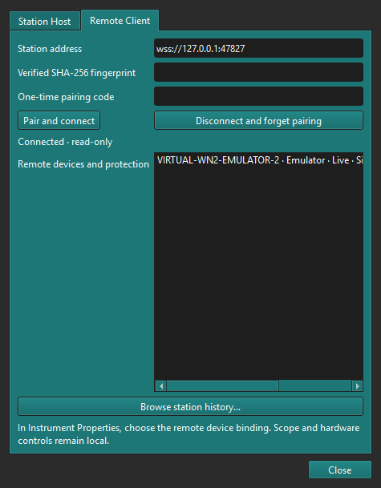

Pair a Remote Client after the host is ready
First complete desktop host setup or Pi service setup. The host must be listening. For first-time pairing, ask the host operator for a current invitation covering the WN-2 devices you need. A remembered pairing can reconnect without a new invitation while its host grant remains valid.
- On the other computer, open RayWn2App and select Tools → Remote Station → Remote Client.
- Select New profile and enter a descriptive Profile name, such as Home Station or Repeater Site. Enter the host's address as wss://HOST:PORT. For a host listening on 192.168.1.50 port 47827, enter wss://192.168.1.50:47827. For a remote site, connect your VPN first and use the reachable station address.
- Enter the host's verified SHA-256 fingerprint. Copy the full fingerprint. Colon-separated and plain hexadecimal forms are accepted.
- Leave Remember pairing securely enabled if you want to reconnect in later application sessions. Startup reconnect remains OFF unless you explicitly select it and save. Enter the current pairing code and select Pair and connect. Look for Connected · read-only and your WN-2 in the device list. If the invitation expired, ask the host operator for a new one.

A saved station profile with startup reconnect OFF. No station is connected in this illustration. After connecting, permitted WN-2 devices appear below. Select image to enlarge.

Display CH2 readings
- Close the Remote Station dialog and right-click the desired dashboard instrument. Choose Properties.
- Under Device identity, select the remote entry ending in your WN-2 serial. Its name starts with remote: and includes the host certificate identity.
- Select RF channel 2, then a measurement such as Forward average, Forward peak, Reflected average, SWR or Combined RF Channel. Choose the display and range you prefer, then click OK.
- Repeat for the other instruments and save the client layout. Each client arranges its own instruments. The toolbar's USB status refers to local devices; check the Remote Client dialog for the station connection.
With RF off, a fresh meter can show near-zero watts and Low RF. SWR may be unavailable because there is insufficient forward RF. When the host loses the WN-2 or the network connection, the client clears live values and shows an unavailable or recovery state.
Reconnect and troubleshoot
Select a saved profile and use Connect saved pairing to reconnect without another code. Up to sixteen profiles can be saved, with one active station at a time. Switching connections clears the previous station readings; it does not change your saved instrument bindings. A running client retries temporary network loss and can resume after a Pi host reboot when the service keeps the same certificate and pairing store.
Disconnect stops the connection and retries while retaining pairing. Forget pairing deletes its local secret and disables that profile's startup reconnect. Delete profile removes the profile and secret. These actions do not revoke access at the host. Failed secret deletion preserves the profile and reports the error. To change a saved station address or fingerprint, or turn off secure remembering, first Forget pairing, then edit and save the profile and pair again. A simple profile rename keeps the pairing.
Reconnect to this station when RayWn2App starts is OFF by default. Save it for the one station you want to reconnect automatically. A missing or locked credential store leaves the client stopped with a message; unlock or repair it and retry Connect. Disconnect cancels any pending lookup for this session without changing the saved next-launch preference.
Pairing secrets use Windows Credential Manager, macOS Keychain or Linux Secret Service. They are never stored in layouts or ordinary profile settings. No unencrypted fallback is used. An unsuccessful secure save leaves the current session connected but clearly reports that the pairing was not saved.
A newly opened client can reuse securely remembered pairing while the host retains its grant. The Pi service preserves grants; stopping or restarting a desktop host clears its running grants and requires a new invitation. A revoked grant or changed/invalid certificate stops reconnect attempts. Verify a replacement fingerprint independently before pairing. A changed host certificate also requires updating the remote device bindings in instruments.
If pairing fails, check the host is listening, the address is reachable and the code is current. If the list is empty, check which devices were selected when the host generated your invitation. If the device is listed but a tile is unavailable, check its remote identity and channel. See Remote history for recorded values.